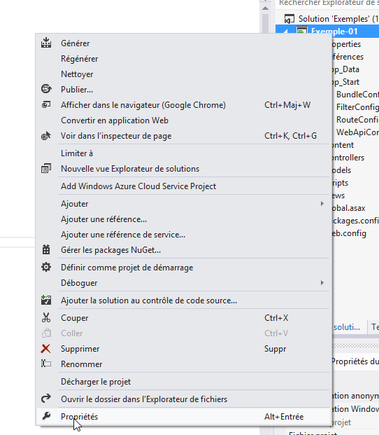
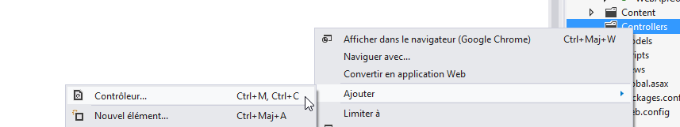
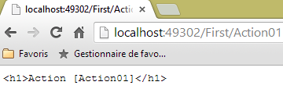
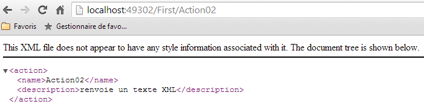
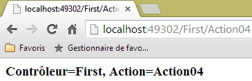
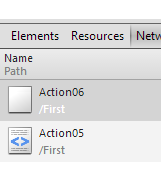
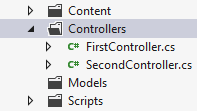
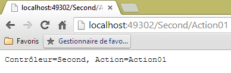
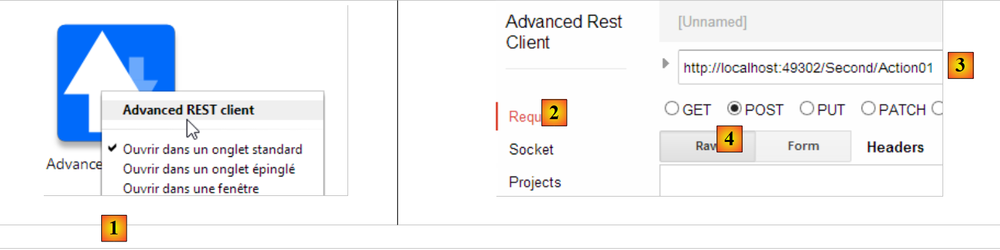
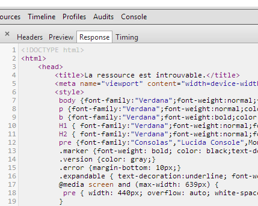

3. وحدات التحكم، الإجراءات، التوجيه
لننظر إلى بنية تطبيق ASP.NET MVC:
 |
في هذا الفصل، نلقي نظرة على العملية التي تنقل الطلب [1] إلى وحدة التحكم والإجراء [2a] اللذين سيقومان بمعالجته، وهي آلية تُسمى التوجيه. كما نقدم أيضًا الاستجابات المختلفة [3] التي يمكن أن تقدمها الإجراء للمتصفح. وقد تكون هذه الاستجابات غير عرض V [4b].
3.1. هيكل مشروع ASP.NET MVC
لنقم بإنشاء أول مشروع ASP.NET MVC باستخدام Visual Studio Express 2012. سنقوم بإضافته [1] إلى الحل المستخدم في الفصل السابق:
 |
 |
- في [2]، اسم المشروع الجديد؛
- إلى [3, 4]، نختار مشروعًا أساسيًا ASP.NET MVC. يوفر لنا هذا النموذج تطبيق ويب فارغًا ولكنه يحتوي على جميع الموارد (DLL، مكتبات جافا سكريبت، ...) اللازمة للعمل.
يتم عرض المشروع الناتج في [5]. سنجعله [6] مشروع بدء الحل:
 |
يجب ملاحظة النقاط التالية في [5]:
- تعكس بنية المشروع نموذجه MVC:
- سيتم وضع وحدات التحكم C في المجلد [Controllers]،
- سيتم وضع نماذج البيانات M في المجلد [Models]،
- سيتم وضع طرق العرض V في المجلد [Views]،
 |
- في [1]، سيكون الملف [Site.css] هو الملف CSS الافتراضي للتطبيق؛
- في [2]، يتوفر لدينا عدد من مكتبات جافا سكريبت؛
- في [3]، نجد ثلاث طرق عرض خاصة: _ViewStart، _Layout، Error.
الملف [_ViewStart] هو التالي:
@{
Layout = "~/Views/Shared/_Layout.cshtml";
}
- السطر 1: يشير الحرف @ إلى تسلسل C# في العرض. في الواقع، يمكن تضمين كود C# في عرض؛
- السطر 2: يحدد متغير Layout الذي يحدد العرض الأصلي لجميع العروض. وهو يتوافق مع الصفحة الرئيسية لإطار العمل ASP.NET الكلاسيكي.
الملف [_Layout] هو التالي:
<!DOCTYPE html>
<html>
<head>
<meta charset="utf-8" />
<meta name="viewport" content="width=device-width" />
<title>@ViewBag.Title</title>
@Styles.Render("~/Content/css")
@Scripts.Render("~/bundles/modernizr")
</head>
<body>
@RenderBody()
@Scripts.Render("~/bundles/jquery")
@RenderSection("scripts", required: false)
</body>
</html>
عندما يتم عرض إحدى طرق العرض في المجلد [Views]، سيتم عرض نصها بواسطة السطر 11 أعلاه. وهذا يعني أن طريقة العرض لا تحتاج إلى تضمين العلامات <html> و<head> و<body>. حيث يتم توفيرها بواسطة الملف أعلاه. ويبدو هذا الملف معقدًا بعض الشيء في الوقت الحالي. فلنبسطه:
<!DOCTYPE html>
<html>
<head>
<meta charset="utf-8" />
<meta name="viewport" content="width=device-width" />
<title>Tutoriel ASP.NET MVC</title>
</head>
<body>
<h2>Tutoriel ASP.NET MVC</h2>
@RenderBody()
</body>
</html>
- السطر 6: العنوان المشترك لجميع العروض؛
- السطر 9: العنوان المشترك لجميع العروض؛
- السطر 10: المحتوى الخاص بالعرض المعروض.
 |
- [Web.config] هو ملف تكوين تطبيق الويب. وهو ملف معقد. سيكون من الضروري تعديله عند استخدام إطار العمل [Spring.net] في بنية متعددة الطبقات.
- يحتوي [Global.asax] على الكود الذي يتم تنفيذه عند بدء تشغيل التطبيق. بشكل عام، يستخدم هذا الكود ملفات التكوين المختلفة للتطبيق، بما في ذلك [Web.config].
3.2. التوجيه الافتراضي لـ URL
رمز [Global.asax] هو في الوقت الحالي كما يلي:
using System.Web.Http;
using System.Web.Mvc;
using System.Web.Optimization;
using System.Web.Routing;
namespace Exemple_01
{
public class MvcApplication : System.Web.HttpApplication
{
protected void Application_Start()
{
...
}
}
}
- السطر 6، namespace للفئة. وهو مستمد مباشرة من اسم المشروع وموجود في خصائص المشروع:

 |
نحدد في [1] مساحة الأسماء الافتراضية. ثم يتم استخدامها بشكل افتراضي لجميع الفئات التي سيتم إنشاؤها في المشروع.
لنعد إلى كود [Global.asax]:
using System.Web.Http;
using System.Web.Mvc;
using System.Web.Optimization;
using System.Web.Routing;
namespace Exemple_01
{
public class MvcApplication : System.Web.HttpApplication
{
protected void Application_Start()
{
...
}
}
}
- السطر 9: الفئة [MvcApplication] مشتقة من الفئة [HttpApplication]. يمكن تغيير الاسم [MvcApplication]؛
- السطر 11: الطريقة [Application_Start] هي الطريقة التي يتم تنفيذها عند بدء تشغيل تطبيق الويب. يتم تنفيذها مرة واحدة فقط. وهنا يتم تهيئة التطبيق.
رمز [Application_Start] هو حاليًا كما يلي:
protected void Application_Start()
{
AreaRegistration.RegisterAllAreas();
WebApiConfig.Register(GlobalConfiguration.Configuration);
FilterConfig.RegisterGlobalFilters(GlobalFilters.Filters);
RouteConfig.RegisterRoutes(RouteTable.Routes);
BundleConfig.RegisterBundles(BundleTable.Bundles);
}
في الوقت الحالي، لا داعي لفهم هذا الكود بالكامل. تحدد الأسطر 5-8 المسارات التي يقبلها تطبيق الويب. لنعد إلى بنية تطبيق ASP.NET MVC:
 |
لقد أوضحنا أن [Front Controller] يجب أن يوجه URL إلى الإجراء المسؤول عن معالجته. يستخدم المسار لربط نموذج URL بإجراء. يتم تعريف هذه المسارات في مجلد [App_Start] للمشروع بواسطة فئات [WebApiConfig, FilterConfig, RouteConfig, BundleConfig]:
 |
لا يهمنا في الوقت الحالي سوى الفئة [RouteConfig]:
using System.Web.Mvc;
using System.Web.Routing;
namespace Exemple_01
{
public class RouteConfig
{
public static void RegisterRoutes(RouteCollection routes)
{
routes.IgnoreRoute("{resource}.axd/{*pathInfo}");
routes.MapRoute(
name: "Default",
url: "{controller}/{action}/{id}",
defaults: new { controller = "Home", action = "Index", id = UrlParameter.Optional }
);
}
}
}
تحدد الأسطر 12-16 شكل URL الذي يقبله التطبيق. ويُطلق على ذلك اسم مسار. قد يكون هناك عدة مسارات ممكنة (= عدة نماذج ممكنة لـ URL). وتتميز هذه المسارات عن بعضها البعض بأسمائها (السطر 13). يتم تحديد شكل URL للمسار في السطر 14. هنا، سيتكون URL من ثلاثة مكونات:
- {controller}: اسم فئة مشتقة من [Controller]. سيتم البحث عنها في مجلد [Controllers] الخاص بالمشروع. وبحسب الأعراف، إذا كان URL هو /X/Y/Z، فإن وحدة التحكم المسؤولة عن معالجة هذا URL ستكون الفئة XController. يتم إضافة اللاحقة Controller إلى اسم وحدة التحكم الموجودة في URL؛
- {action}: اسم طريقة في وحدة التحكم المحددة أعلاه. وهي التي ستتلقى المعلمات المصاحبة لـ URL وستقوم بمعالجتها. يمكن أن تعطي هذه الطريقة نتائج متنوعة:
- void: ستقوم الإجراء بنفسها بإنشاء الرد إلى متصفح العميل
- String: ترسل الإجراء سلسلة أحرف إلى العميل؛
- ViewResult: ترسل عرضًا إلى العميل؛
- PartialViewResult: ترسل عرضًا جزئيًا؛
- EmptyResult: يتم إرسال استجابة فارغة إلى العميل؛
- RedirectResult: يطلب من العميل إعادة التوجيه إلى URL
- RedirectToRouteResult: نفس الشيء، لكن URL يتم إنشاؤها من مسارات التطبيق؛
- JsonResult: ترسل استجابة JSON
- JavaScriptResult: يعيد رمز جافا سكريبت إلى العميل؛
- ContentResult: يعيد تدفق HTML إلى العميل دون المرور عبر عرض؛
- FileContentResult: يعيد ملفًا إلى العميل؛
- FileStreamResult: نفس الشيء ولكن بطريقة أخرى؛
- FilePathResult: ...
- {id}: معلمة سيتم إرسالها إلى الإجراء. ولهذا الغرض، يجب أن يحتوي الإجراء على معلمة باسم id.
يحدد السطر 15 القيم الافتراضية عندما لا يكون URL بالشكل المتوقع /{controller}/{action}/{id}. كما يشير أيضًا إلى أن المعلمة {id} في URL اختيارية. فيما يلي قائمة بـ URL غير المكتملة و URL المكتملة بالقيم الافتراضية:
URL الأصلي | ملف URL المكتمل |
/ | /Home/Index |
/Do | /Do/Index |
/Do/Something | /Do/Something |
/Do/Something/4 | /Do/Something/4 |
/Do/Something/x/y/z | URL غير موجهة |
3.3. إنشاء وحدة تحكم وإجراء أول
لنقم بإنشاء وحدة تحكم أولى:
 |
 |
- في [1]، أدخل اسم وحدة التحكم مع لاحقتها [Controller]؛
- في [2]، قم بإنشاء وحدة تحكم فارغة MVC؛
- في [3]، تم إنشاؤه.
رمز [FirstController] هو التالي:
using System;
using System.Collections.Generic;
using System.Linq;
using System.Web;
using System.Web.Mvc;
namespace Exemple_01.Controllers
{
public class FirstController : Controller
{
//
// GET: /First/
public ActionResult Index()
{
return View();
}
}
}
- السطر 7: تم إنشاء namespace افتراضيًا؛
- السطر 9: الفئة [FirstController] مشتقة من الفئة [System.Web.Mvc.Controller]؛
- الأسطر 14-17: تم إنشاء إجراء [Index] بشكل افتراضي. وهو إجراء عام. وهذا أمر مهم، وإلا فلن يتم العثور عليه. وهو يعرض نوع [ActionResult] وهو فئة مجردة تنحدر منها معظم النتائج التي يعرضها الإجراء عادةً. وهو نوع "شامل" يمكن تحديده باستبداله بالاسم الحقيقي للنوع الذي يتم إرجاعه؛
- السطر 16: لا تقوم الطريقة بأي شيء. تكتفي بإرجاع عرض، أي نوع [ViewResult]. لم يتم تحديد اسم العرض. في هذه الحالة، يبحث إطار العمل في المجلد [Views / First] عن عرض يحمل اسم الإجراء، أي هنا: [Index.cshtml].
لنقم بإنشاء العرض [Index.cshtml]:
 |
- في [1]، نضغط بزر الفأرة الأيمن على كود الإجراء ونختار الخيار [Ajouter une vue]؛
- في [2]، يقترح المساعد عرضًا يحمل اسم الإجراء. وهذا ما نريده هنا؛
- في [3]، يُقترح استخدام الصفحة الرئيسية [_Layout.cshtml] بشكل افتراضي؛
- في [4]، بمجرد التحقق من الصحة، يقوم المساعد بإنشاء العرض في مجلد فرعي ضمن المجلد [Views] يحمل اسم وحدة التحكم (First).
الرمز الذي تم إنشاؤه للعرض [Index] هو التالي:
@{
ViewBag.Title = "Index";
}
<h2>Index</h2>
- الأسطر 1-3: كود C# يحدد متغيرًا؛
- السطر 5: علامة HTML.
يتم استبدال الكود السابق بالكامل بهذا الكود:
<strong>Vue [Index]...</strong>
لنلخص ما سبق:
- لدينا وحدة تحكم C تسمى [First]؛
- لدينا إجراء يسمى [Index] يطلب عرض طريقة عرض تسمى [Index]؛
- لدينا العرض V [Index].
يمكننا استدعاء الإجراء [Index] بطريقتين:
- /First/Index؛
- /First، لأن [Index] هي أيضًا الإجراء الافتراضي في المسارات.
لنقم بتشغيل التطبيق (CTRL-F5). نحصل على الصفحة التالية:
1

في [1]، كانت URL المطلوبة هي http://localhost:49302. لا يوجد مسار. نعلم أن جهاز التوجيه الخاص بنا يتوقع URL بالشكل /{controller}/{action}/{id}. ونظرًا لعدم وجود هذه العناصر، يتم استخدام القيم الافتراضية. يصبح URL هو http://localhost:49302/Home/Index. لا يوجد وحدة التحكم [Home]. وبالتالي يتم رفض URL.
لنجرب الآن URL http://localhost:49302/First/Index عن طريق كتابتها مباشرة في المتصفح:
 |
تم إنشاء الصفحة أعلاه بواسطة الإجراء [Index] الخاص بوحدة التحكم [First]. الصفحة التي تم إنشاؤها بواسطة هذا الإجراء هي العرض [Index] الذي كان رمزه كما يلي:
<strong>Vue [Index]...</strong>
وهي تولد الجزء [1]. أما الجزء [2]، فيأتي من الصفحة الرئيسية [_Layout] التي حددناها سابقًا:
<!DOCTYPE html>
<html>
<head>
<meta charset="utf-8" />
<meta name="viewport" content="width=device-width" />
<title>Tutoriel ASP.NET MVC</title>
</head>
<body>
<h2>Tutoriel ASP.NET MVC</h2>
@RenderBody()
</body>
</html>
السطر 9 أنشأ الجزء [2] من الصفحة. أما العرض [Index] فلا يظهر إلا في السطر 10.
إذا عرضنا كود المصدر للصفحة المستلمة، نجد بالفعل الصفحة [Index] مضمنة (السطر 10 أدناه) في الصفحة [Layout]:
لنجرب الآن URL [/First]:
 |
كان URL [/First] غير مكتمل. تم استكماله بالقيم الافتراضية للمسار وأصبح [/First/Index]. وبالتالي نحصل على نفس النتيجة السابقة.
3.4. إجراء بنتيجة من النوع [ContentResult] - 1
لنقم بإنشاء إجراء جديد في وحدة التحكم [First]:
using System.Text;
using System.Web.Mvc;
namespace Exemple_01.Controllers
{
public class FirstController : Controller
{
// Index
public ViewResult Index()
{
return View();
}
// Action01
public ContentResult Action01()
{
return Content("<h1>Action [Action01]</h1>", "text/plain", Encoding.UTF8);
}
}
}
يتم تعريف الإجراء الجديد في الأسطر 14-18. ويقتصر على إرجاع سلسلة أحرف باستخدام الطريقة [Content] (السطر 16) من الفئة [Controller] (السطر 6). معلمات الطريقة هي:
- سلسلة الأحرف الخاصة بالاستجابة؛
- مؤشر لطبيعة النص المرسل: " text/plain "، "text/html "، " text/xml "، ... يُسمى هذا المؤشر type MIME (http://fr.wikipedia.org/wiki/Type_MIME )؛
- المعلمة الثالثة تسمح بتحديد نوع الترميز المستخدم للنص.
بدلاً من استخدام النوع المجرد [ActionResult]، تحدد طرقنا النوع الفعلي المعروض (السطران 9 و14).
لنطلب URL [/First/Action01]. نحصل على الصفحة التالية:
 |
لنلقِ نظرة على شفرة المصدر للصفحة التي تم استلامها:
لم يتلق المتصفح سوى النص الذي أرسلته الإجراء ولا شيء غير ذلك. هذا الوضع مفيد عندما نريد أن نطلب من خادم الويب بيانات خالصة بدون التغليف HTML المحيط بها. نلاحظ أعلاه أن المتصفح لم يفسر العلامة <h1>. لفهم السبب، لنلقِ نظرة في Chrome على التبادلات:
أرسل المتصفح الرؤوس التالية:
رد عليه الخادم بالرؤوس التالية:
- السطر 3: يحدد طبيعة المستند. نجد السمات المحددة في الطريقة [Action01]. ولأنه تم إخباره بأن المستند من النوع "text/plain" وليس "text/html"، لم يقم المتصفح بتفسير العلامة <h1> التي كانت موجودة في المستند المستلم.
3.5. إجراء بنتيجة من النوع [ContentResult] - 2
لننظر إلى الإجراء الثالث التالي:
using System.Text;
using System.Web.Mvc;
namespace Exemple_01.Controllers
{
public class FirstController : Controller
{
...
// Action02
public ContentResult Action02()
{
string data = "<action><name>Action02</name><description>renvoie un texte XML</description></action>";
return Content(data, "text/xml", Encoding.UTF8);
}
}
}
- السطر 12: يتم تعريف نص XML؛
- السطر 13: يتم إرساله إلى المتصفح مع تحديد أنه من نوع XML مع النوع MIME "text/xml".
في المتصفح، نحصل على الصفحة التالية:
 |
لنلقِ نظرة في Chrome على استجابة HTTP من الخادم:
- السطر 3: يحدد طبيعة المستند. نجد السمات المحددة في الطريقة [Action02]؛
- السطر 12: حجم المستند بالبايت الذي أرسله الخادم.
المستند الذي أرسله الخادم هو هذا (نسخة من Chrome):
 |
3.6. إجراء بنتيجة من النوع [JsonResult]
لنضف الإجراء التالي إلى وحدة التحكم [First]:
// الإجراء 03
public JsonResult Action03()
{
dynamic personne = new ExpandoObject();
personne.nom = "someone";
personne.age = 20;
return Json(personne,JsonRequestBehavior.AllowGet);
}
- السطر 4: متغير من النوع dynamic. عند التنفيذ، يمكننا إضافة خصائص إلى هذا المتغير بحرية. يتم إنشاء الخاصية في نفس الوقت الذي يتم فيه تهيئتها؛
- السطران 5-6: يتم تهيئة خاصيتين nom و age؛
- السطر 7: يتم إرجاع تمثيل الكائن JSON (ترميز كائنات جافا سكريبت). يسمح JSON بتسلسل كائن إلى سلسلة أحرف والعكس بالعكس، أي فك تسلسل سلسلة إلى كائن. وهو بديل لتسلسل/فك تسلسل XML؛
- السطر 2: تعرض العملية نوع [JsonResult]. لا يمكن عرض هذا النوع إلا لطلب POST. إذا أردنا إرجاعه لطريقة GET، يجب إعطاء المعلمة الثانية لمنشئ فئة Json (السطر 7) القيمة JsonRequestBehavior.AllowGet.
عند طلب URL [/First/Action03]، يعرض المتصفح ما يلي:
 |
أما استجابة الخادم HTTP فهي كما يلي:
- السطر 3: يوضح أن المستند المرسل هو JSON؛
- السطر 10: يبلغ حجم المستند المرسل 58 بايت. وهو كما يلي:
يُنظر إلى العنصر الديناميكي [personne] من قبل JSON على أنه مصفوفة من القواميس حيث كل قاموس:
- يتوافق مع حقل في المتغير [personne]؛
- يحتوي على مفتاحين هما "Key" و"Value". ترتبط قيمة "Key" باسم الحقل، بينما ترتبط قيمة "Value" بقيمة الحقل.
3.7. إجراء بنتيجة من النوع [string]
لنضف الإجراء التالي إلى وحدة التحكم [First]:
// الإجراء 04
public string Action04()
{
return "<h3>Contrôleur=First, Action=Action04</h3>";
}
عندما نطلب URL [/First/Action04] باستخدام Chrome، نحصل على الرد التالي:
 |
نلاحظ أن العلامة <h3> قد تم تفسيرها. لنلقِ نظرة على الرد HTTP من الخادم:
والوثيقة التالية:
نرى في السطر 3 أن الخادم أشار إلى إرسال نص بتنسيق HTML. ولهذا السبب قام المتصفح بتفسير العلامة <h3>. وعندما نريد إرسال نص عادي، فمن الأفضل إرجاع [ContentResult] بدلاً من [string]. يسمح لنا [ContentResult] بالفعل بتحديد نوع MIME "text/plain" للإشارة إلى أننا نرسل نصًا غير منسق، وبالتالي غير قابل للتفسير من قبل المتصفح.
3.8. إجراء بنتيجة من النوع [EmptyResult]
لنفترض الإجراء الجديد التالي:
// الإجراء 05
public EmptyResult Action05()
{
return new EmptyResult();
}
تكتفي العملية بإرجاع نوع [EmptyResult]. في هذه الحالة، يرسل الخادم استجابة فارغة إلى العميل كما يظهر في استجابته HTTP:
- السطر 9: يُعلم الخادم عميله بأنه يرسل إليه مستندًا فارغًا.
3.9. إجراء بنتيجة من النوع [RedirectResult] - 1
لنفترض الإجراء الجديد التالي:
// الإجراء 06
public RedirectResult Action06()
{
return new RedirectResult("/First/Action05");
}
تُرجع الإجراء نوعًا [RedirectResult]. يسمح هذا النوع بإرسال أمر إعادة توجيه إلى العميل نحو معلمة URL الخاصة بالمُنشئ (السطر 4). ثم يقوم العميل بإرسال طلب جديد GET إلى [/First/Action05]. وبالتالي، يقوم العميل بإرسال طلبين إجمالاً.
يعرض المتصفح نتيجة الطلب الثاني:
 |
دعونا ندرس استجابة الخادم HTTP في Chrome:
 |
نرى أعلاه الطلبين المرسَلين من المتصفح. لنفحص الطلب الأول [Action06]. رد الخادم HTTP هو التالي:
- السطر 1: رد الخادم برمز 302 Found. في الوقت الحالي، كان الرمز 200 OK، مما يعني أنه تم العثور على المستند المطلوب. يشير الرمز 302 إلى أن إعادة التوجيه مطلوبة. يتم تحديد عنوان إعادة التوجيه في السطر 4. نجد هنا عنوان إعادة التوجيه الذي حددناه في كود الإجراء؛
- السطر 11: يشير الخادم إلى أنه مع إجابته HTTP، يرسل مستندًا من نوع text/html (السطر 3) بحجم 132 بايت (السطر 11). عندما نفحص في Chrome الرد على الطلب [Action06]، نجده فارغًا كما كان متوقعًا. ربما هناك تفسير لذلك، لكنني لا أعرفه.
بسبب إعادة التوجيه، يقوم المتصفح بإرسال طلب جديد GET إلى URL المحدد في السطر 4 أعلاه، كما يمكن رؤيته في Chrome في السطر 1 أدناه:
3.10. إجراء بنتيجة من النوع [RedirectResult] - 2
أو الإجراء الجديد التالي:
// Action07
public RedirectResult Action07()
{
return new RedirectResult("/First/Action05",true);
}
في السطر 4، تمت إضافة معلمة ثانية إلى منشئ النوع [RedirectResult]. وهي قيمة منطقية تكون افتراضيًا false. عند تغييره إلى true، يتم تعديل الاستجابة HTTP المرسلة إلى العميل. وتصبح:
وبذلك يصبح رمز الاستجابة المرسل إلى العميل الآن 301 Moved Permanently. تتم عملية إعادة التوجيه كما في السابق، ولكن يتم الإشارة إلى أن إعادة التوجيه هذه دائمة. وهذا يسمح لمحركات البحث باستبدال الرمز القديم URL بالرمز الجديد في نتائجها.
3.11. إجراء بنتيجة من النوع [RedirectToRouteResult]
لنفترض أن الإجراء الجديد هو التالي:
// Action08
public RedirectToRouteResult Action08()
{
return new RedirectToRouteResult("Default",new RouteValueDictionary(new {controller="First",action="Action05"}));
}
- السطر 2: تعطي العملية نوع [RedirectToRouteResult]. يسمح هذا النوع بإعادة توجيه العميل إلى URL المحددة ليس بسلسلة أحرف كما في السابق بل بمسار.
يتم تعريف المسارات في [App_Start/RouteConfig]. لا يوجد سوى مسار واحد حاليًا:
routes.MapRoute(
name: "Default",
url: "{controller}/{action}/{id}",
defaults: new { controller = "Home", action = "Index", id = UrlParameter.Optional }
);
- السطر 4، يُطلب من العميل إعادة التوجيه إلى المسار المسمى [Default] باستخدام المتغير controller=First والمتغير action=Action05. ثم يقوم نظام التوجيه بإنشاء مسار إعادة التوجيه URL من /First/Action05. وهذا ما تظهره استجابة الخادم HTTP:
- السطر 1: إعادة التوجيه؛
- السطر 4: عنوان إعادة التوجيه الذي أنشأه نظام التوجيه لـ URL.
3.12. إجراء بنتيجة من النوع [void]
لنفترض أن الإجراء الجديد هو التالي:
// Action09
public void Action09()
{
string nom = Request.QueryString["nom"] ?? "inconnu";
Response.AddHeader("Content-Type", "text/plain");
Response.Write(string.Format("<h3>Action09</h3>nom={0}", nom));
}
- السطر 2: لا تعرض الإجراء أي نتيجة. تكتب بنفسها في تدفق الرد المرسل إلى العميل؛
- السطر 4: يتم استرداد معلمة محتملة باسم [nom] في الطلب. يمكن الوصول إلى هذا المعلمة عبر الخاصية [Request] للمتحكم [Controller] الذي يرثه المتحكم [First]. المعلمة [nom] التي تم تمريرها في شكل [/First/Action09?nom=quelquechose]، متوفرة في Request.QueryString["nom"]. صيغة السطر 4 تعادل:
- السطر 5: يمكن الوصول إلى الرد المرسل إلى العميل عبر الخاصية [Response] الخاصة بوحدة التحكم [Controller] التي ترثها وحدة التحكم [First]؛
- السطر 5: يتم تعيين الرأس HTTP [Content-Type] الذي يشير إلى طبيعة المستند الذي يستعد الخادم لإرساله إلى العميل. هنا تشير "text/plain" إلى أن المستند عبارة عن نص عادي لا يجب أن يفسره المتصفح؛
- السطر 6: نكتب في تدفق الرد سلسلة من الأحرف. وقد أدرجنا فيها علامات HTML التي لا يجب أن يفسرها المتصفح لأنه سيكون قد تلقى مسبقًا الرأس HTTP [Content-Type : text/plain"]. هذا ما نريد التحقق منه.
لنقوم بتجميع المشروع ونطلب URL [/First/Action09?nom=someone ][1] ثمURL [/First/Action09 ] [2]:
 |
لنلقِ نظرة الآن في Chrome على استجابة الخادم HTTP:
- السطر 3: نجد الرأس HTTP الذي حددناه بأنفسنا في كود الإجراء.
3.13. وحدة تحكم ثانية
لنقم بإنشاء وحدة تحكم ثانية في المشروع. سنتبع الطريقة الموضحة في الفقرة 3.1، صفحة 40. سنسميها [Second].
 |
الكود الذي تم إنشاؤه هو التالي:
namespace Exemple_01.Controllers
{
public class SecondController : Controller
{
//
// GET: /Second/
public ActionResult Index()
{
return View();
}
}
}
لنقوم بتعديله على النحو التالي:
using System.Text;
using System.Web.Mvc;
namespace Exemple_01.Controllers
{
public class SecondController : Controller
{
// /ثانية/Action01
public ContentResult Action01()
{
return Content("Contrôleur=Second, Action=Action01", "text/plain", Encoding.UTF8);
}
}
}
ثم نطلب URL [/Second/Action01] باستخدام متصفح. نحصل على الرد التالي:
 |
تم طلب هذا URL باستخدام الأمر HTTP GET كما تظهر سجلات HTTP للطلب في Chrome:
يمكن طلب URL أيضًا باستخدام الأمر HTTP POST. لإثبات ذلك، لنستخدم مرة أخرى التطبيق [Advanced Rest Client]:
 |
- في [1]، يتم تشغيل التطبيق (في علامة التبويب [Applications] في علامة تبويب جديدة في Chrome)؛
- في [2]، نختار الخيار [Request]؛
- في [3]، نحدد URL المطلوب؛
- في [4]، نحدد أن URL يجب أن يُطلب مع POST؛
يتم تنشيط سجلات Chrome بواسطة (CTRL-I) للحصول على استجابة HTTP من الخادم. عند تنفيذ [Send] للطلب السابق، تكون التبادلات HTTP كما يلي:
يرسل المتصفح الطلب التالي:
- السطر 1: تم طلب URL بالفعل مع POST؛
- السطر 4: حجم العناصر المرسلة بالبايت. لا يوجد أي منها هنا.
الرد HTTP من الخادم هو التالي:
- السطر 3: يرسل الخادم مستندًا نصيًا غير منسق (عادي)؛
- السطر 12: مكون من 148 حرفًا.
المستند المرسل هو التالي:
 |
نحصل على نفس المستند كما في حالة GET.
3.14. إجراء تمت تصفيته بواسطة سمة
لنقم بإنشاء الإجراء الجديد التالي:
// /ثانية/Action02
[HttpPost]
public ContentResult Action02()
{
return Content("Contrôleur=Second, Action=Action02", "text/plain", Encoding.UTF8);
}
الإجراء [Action02] مشابه للإجراء [Action01] ولكننا نحدد أنه لا يمكن الوصول إليه إلا من خلال الأمر HTTP POST (السطر 2). يمكن استخدام سمات أخرى:
لا يُستخدم HttpGet | لا يستخدم إلا الأمر GET |
HttpHead | يخدم فقط الأمر HEAD |
HttpOptions | يخدم فقط الأمر OPTIONS |
HttpPut | يخدم فقط الأمر PUT |
HttpDelete | لا يخدم سوى الأمر DELETE |
لنطلب URL [/Second/Action02] مباشرة في المتصفح. يتم طلبها عندئذ بواسطة GET. يعرض المتصفح عندئذ الرد التالي:
 |
كانت استجابة الخادم HTTP كما يلي:
- السطر 1: يشير الرمز HTTP 404 Not Found إلى أن الخادم لم يعثر على المستند المطلوب. هنا، لم تتمكن الإجراء [Action02] من تلبية الطلب GET لأنه لا يخدم سوى الأوامر POST؛
- السطر 3: حجم المستند الذي تم إرجاعه. هذه هي الصفحة التي تم عرضها بواسطة المتصفح:
 |
3.15. استرداد عناصر مسار
في الإجراءين الموصوفين سابقًا، كنا نكتب شيئًا من هذا القبيل:
public ContentResult Action02()
{
return Content("Contrôleur=Second, Action=Action02", "text/plain", Encoding.UTF8);
}
كانت أسماء وحدة التحكم والإجراء مكتوبة بشكل ثابت في الكود. إذا قمنا بتغيير هذه الأسماء، فلن يكون الكود صحيحًا بعد ذلك. يمكننا الوصول إلى وحدة التحكم والإجراء بالطريقة التالية:
// /ثانية/إجراء03
public ContentResult Action03()
{
string texte = string.Format("Contrôleur={0}, Action={1}", RouteData.Values["controller"], RouteData.Values["action"]);
return Content(texte, "text/plain", Encoding.UTF8);
}
المسار المحدد في [App_Start/RouteConfig] هو التالي:
routes.MapRoute(
name: "Default",
url: "{controller}/{action}/{id}",
defaults: new { controller = "Home", action = "Index", id = UrlParameter.Optional }
);
السطر 3، يمكن الحصول على العناصر الثلاثة للمسار من خلال RouteData.Values["élément"] مع عنصر في [controller, action, id].
لنطلب URL [http://localhost:49302/Second/Action03]:
 |
لقد استرجعنا اسم وحدة التحكم واسم الإجراء بنجاح.